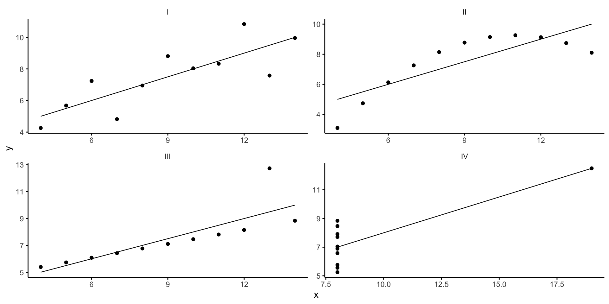
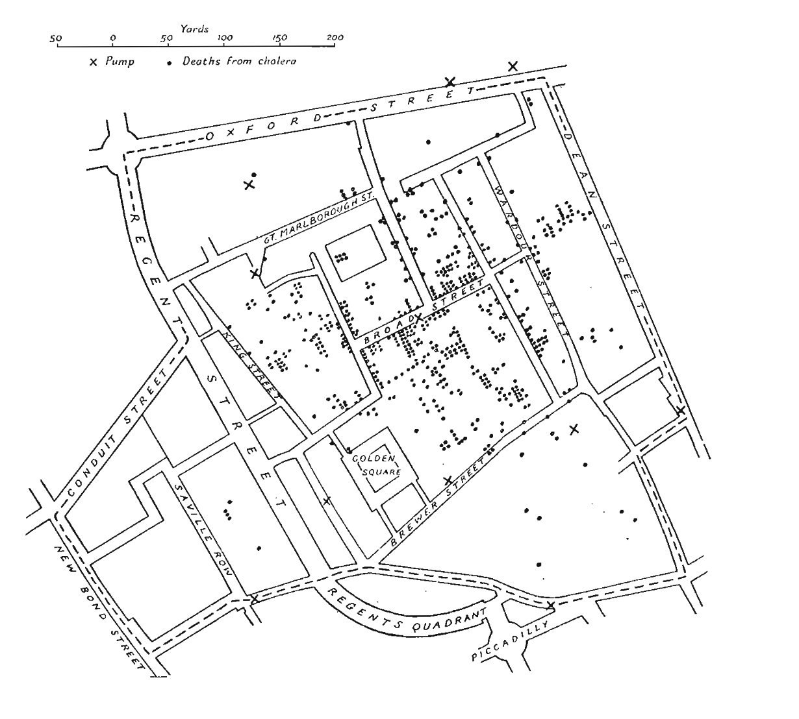

Визуализиране на данни
Квартетът на Anscombe
Квартетът на Anscombe се състои от четири набора от данни, които имат почти идентични статистически характеристики, но изглеждат много различни, когато са представени на графика.
Квартетът на Anscombe
Какво разбираме от долната таблица?
| x1 | y1 | x2 | y2 | x3 | y3 | x4 | y4 | |
|---|---|---|---|---|---|---|---|---|
| 1 | 10.0 | 8.04 | 10 | 9.14 | 10 | 7.46 | 8 | 6.58 |
| 2 | 8.0 | 6.95 | 8 | 8.14 | 8 | 6.77 | 8 | 5.76 |
| 3 | 13.0 | 7.58 | 13 | 8.74 | 13 | 12.74 | 8 | 7.71 |
| 4 | 9.0 | 8.81 | 9 | 8.77 | 9 | 7.11 | 8 | 8.84 |
| 5 | 11.0 | 8.33 | 11 | 9.26 | 11 | 7.81 | 8 | 8.47 |
| 6 | 14.0 | 9.96 | 14 | 8.10 | 14 | 8.84 | 8 | 7.04 |
| 7 | 6.0 | 7.24 | 6 | 6.13 | 6 | 6.08 | 8 | 5.25 |
| 8 | 4.0 | 4.26 | 4 | 3.10 | 4 | 5.39 | 19 | 12.50 |
| 9 | 12.0 | 10.84 | 12 | 9.13 | 12 | 8.15 | 8 | 5.56 |
| 10 | 7.0 | 4.82 | 7 | 7.26 | 7 | 6.42 | 8 | 7.91 |
| 11 | 5.0 | 5.68 | 5 | 4.74 | 5 | 5.73 | 8 | 6.89 |
Квартетът на Anscombe
Може да се покаже, че данните имат еднакви статистически характеристики
| Dataset | N | Mean of X | Mean of Y | Equation of the Regression Line | Standard Error | t-statistics | Correlation |
|---|---|---|---|---|---|---|---|
| 1 | 11 | 9.0 | 7.501 | y = 3.00x + 0.50 | 0.118 | 4.241 | 0.816 |
| 2 | 11 | 9.0 | 7.501 | y = 3.00x + 0.50 | 0.118 | 4.239 | 0.816 |
| 3 | 11 | 9.0 | 7.5 | y = 3.00x + 0.50 | 0.118 | 4.239 | 0.816 |
| 4 | 11 | 9.0 | 7.501 | y = 3.00x + 0.50 | 0.118 | 4.243 | 0.817 |
Квартетът на Anscombe
Когато направим графики на данните, картината е съвсем различна:
Но графиките не са всичко
Ако моделът ви е лош, графиката също:
Примери
Картата на John Snow за смъртността от холера:
Карта на изборите в САЩ
Времеви редове:
Графиките като обекти с функция и като изкуство
Картата на Флорънс Найтингейл
И съвременното й представяне:
## Връзка между време и пространство
Връзка между време и пространство
{kind=link}
Графиките и изкуство
Josef Albers
Josef Albers

GGplot
GGplot
GGplot
GGplot
Принципи на добрата визуализация
Добри и лоши примери
Винаги следваме добрите примери и избягваме лошите практики. Учим се от грешките на другите.
По-малко е повече
Познавайте аудиторията си
- Различни аудитории ще имат различен поглед върху посланието ви.
- Важно е да идентифицирате, колкото е възможно по-рано в процеса на проектиране, аудиторията и посланието, което трябва да предаде визуалното изображение.
Идентифицирайте посланието си
- Една фигура има за цел да изрази идея или да демонстрира факти, или резултат, който би бил дълъг за обяснение думи.
- Важно да се определи ясно ролята на фигурата, т.е. какво е основното послание и как една фигура може най-добре да изрази това послание.
Адаптирайте фигурата към поддържащата среда
- Една фигура може да бъде показана на различни медии, като плакат, компютърен монитор, прожекционен екран (презентация) или обикновен лист хартия.
- Всяка от тези медии представлява различни физически размери за фигурата и всяка предполага различни начини за гледане и взаимодействие с фигурата.
Използвайте текст
- Не можете да обясните всичко в самата фигура - фигурата трябва да бъде придружена от текст, маркери и други визуални помощници, предназначени за аудиторията.
Не се доверявайте на настройките по подразбиране
- Всеки софтуер има настройки по подразбиране. Тъй като тези настройки трябва да се използват за практически всеки тип диаграма, те не са фино настроени за конкретен тип диаграма.
- С други думи, те са достатъчно добри за общ случай, но не са най-добри за нито един конкретен.
Използвайте цветовете ефективно
- Цветът е важен елемент от човешките възприятия и е също толкова важен в дизайна на научна фигура.
- Както казва Edward Tufte, цветът може да бъде или най-големият ви съюзник, или най-големият ви враг, ако не се използва правилно.
Не подвеждайте аудиторията
- Това, което отличава една фигура от графични произведения на изкуството, е наличието на данни, които трябва да бъдат показани възможно най-обективно.
- Една фигура по дефиниция е свързана с данните (било то експериментални, резултат на модел или резултати) и ако отслабите тази връзка, може неволно да предадете различно от предвиденото послание.
Избягвайте графичен боклук (Chartjunk)
- Той се отнася до всички ненужни или объркващи визуални елементи в една фигура, които не подобряват съобщението (в най-добрия случай) или го объркват и изкривяват.
- Използвайте толкова “мастило” за фигурите, колкото е абсолютно необходимо.
Посланието има предимство пред красотата
- Всяка област има свой собствен набор от най-добри практики. Важно е да знаете тези стандарти, защото те улесняват по-директното комуникиране, сравнение между модели, проучвания или експерименти.
- Не се увличайте по естетиката на визуализацията, а следвайте добрите практики.
Използвайте подходящите инструменти
- Съществуват много инструменти, които могат да улеснят живота ви, когато създавате фигури, и познаването на някои от тях може да ви спести много време.
- В зависимост от вида на визуалното изображение, обикновено има специален инструмент, който ще направи това, което се опитвате да постигнете.
Таблици и графики
Принципи
- Всяка таблица има не повече от две дименсии.
- Графиките са подходящи, когато динамиката на данните е по-важна.
- Таблиците са подходящи, когато конкретни променливи са по-важни.
Лоша таблица
| год. | Мъже шофьори | Общо мъже | Жени учители |
|---|---|---|---|
| 2011 | 50.75 | 48.99 | 45.10 |
| 2012 | 52.30 | 49.20 | 46.55 |
| 2013 | 53.10 | 50.33 | 47.60 |
| 2014 | 55.45 | 51.25 | 48.90 |
| 2015 | 57.20 | 52.80 | 50.30 |
| Жени шофьори | Мъже учители | Общо жени | |
| 2011 | 46.55 | 49.80 | 48.25 |
| 2012 | 47.80 | 50.10 | 49.40 |
| 2013 | 48.65 | 51.30 | 50.00 |
| 2014 | 49.75 | 52.55 | 51.10 |
| 2015 | 51.40 | 54.20 | 52.60 |
По-добра таблица
| год. | Общо мъже | Общо жени | Мъже шофьори | Жени шофьори | Мъже учители | Жени учители |
|---|---|---|---|---|---|---|
| 2011 | 59.5 | 54.7 | 58.9 | 54.1 | 55.1 | 60.7 |
| 2012 | 61.3 | 56.4 | 60.9 | 55.8 | 56.7 | 62.0 |
| 2013 | 63.1 | 57.8 | 62.4 | 57.2 | 58.6 | 63.8 |
| 2014 | 65.4 | 59.3 | 64.8 | 58.8 | 60.2 | 65.8 |
| 2015 | 67.1 | 60.9 | 66.6 | 60.7 | 61.7 | 67.3 |
Сложни и добри таблици
Анатомия на една фигура
Видове графики
Хистограма
Хистограмата по-горе показва разпределението на данни. Полезно е за визуализиране на формата на разпределението на данните, като нормалност или коефициент на асиметрия.
Диаграма на разсейване (Scatter Plot)
Диаграмата на разсейване визуализира връзката между две променливи. Всяка точка представлява наблюдение. Графиката може да открои взаимовръзки, тенденции и нетипични наблюдения.
Диаграма “Кутия” (Box Plot)
“Кутията” визуализира мярката за разположение (която ще наречем “медиана”), мярката за разсейване и дава представа за симетричността и разпределението на данните.
Линейна диаграма
Всяка точка от линията представлява наблюдение на определна дата, а сегментите от линията свързват тези точки, за да покажат тенденцията.
Стълбова диаграма
Стълбовата диаграма визуализира стойностите на отделни категории от данните. Височината на всеки стълб отразява стойността или броя на тази категория.
Кръгова диаграма
Кръговата диаграма показва пропорционалните размери на категориите, като всяка част от кръга съответства на съотношението на категорията към цялото. Този тип визуализация може да е полезна когато имате ограничен брой категории, които не изискват точно сравнение.
Диаграма на площта (Area Chart)
Диаграмата на площта визуализира кумулативната стойност на данните във времето. Тя може да е полезна за открояване на основните фактори, въздействащи върху промяната на данните във времето.